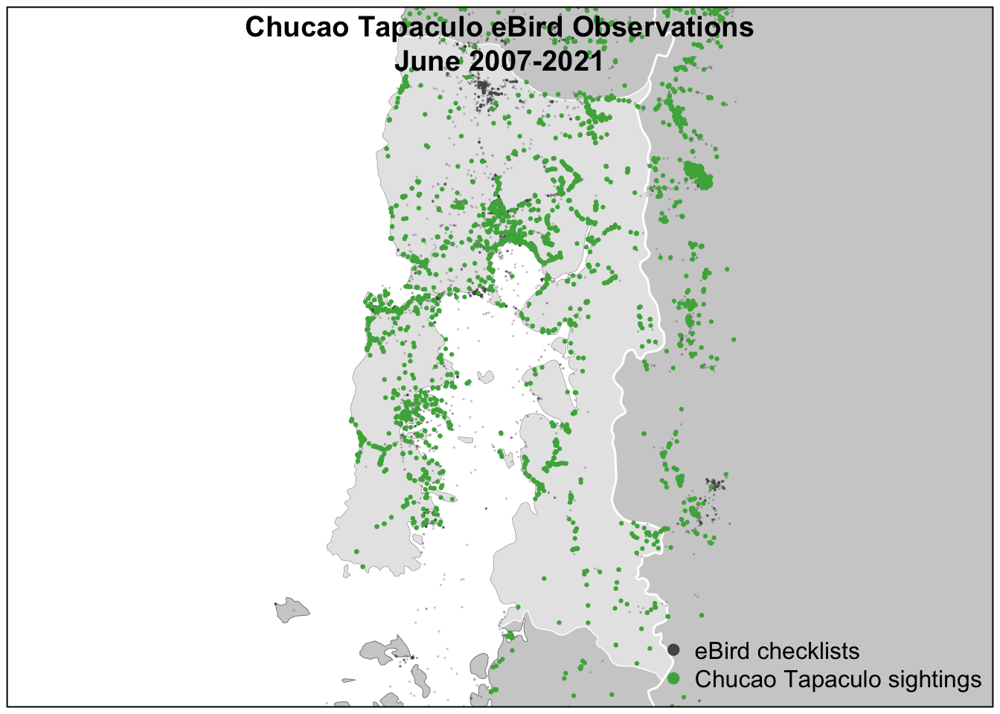
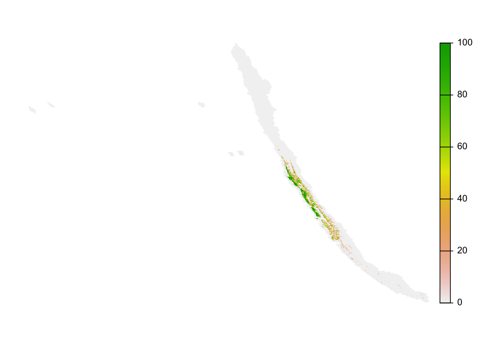
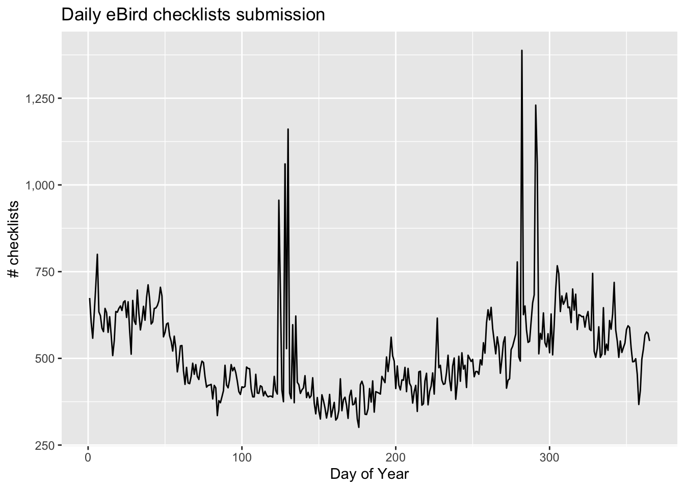
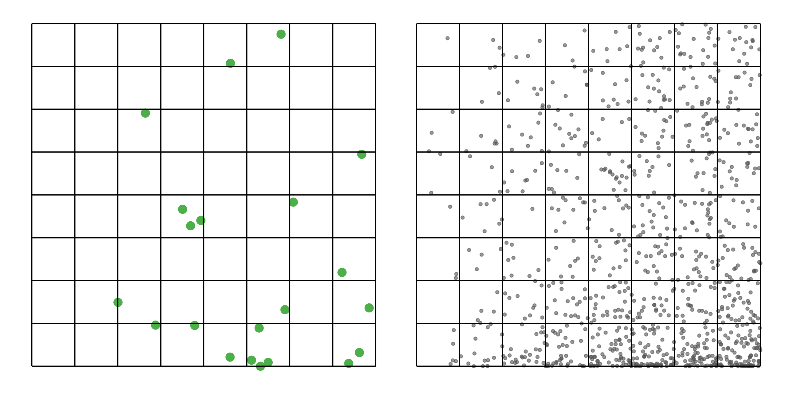
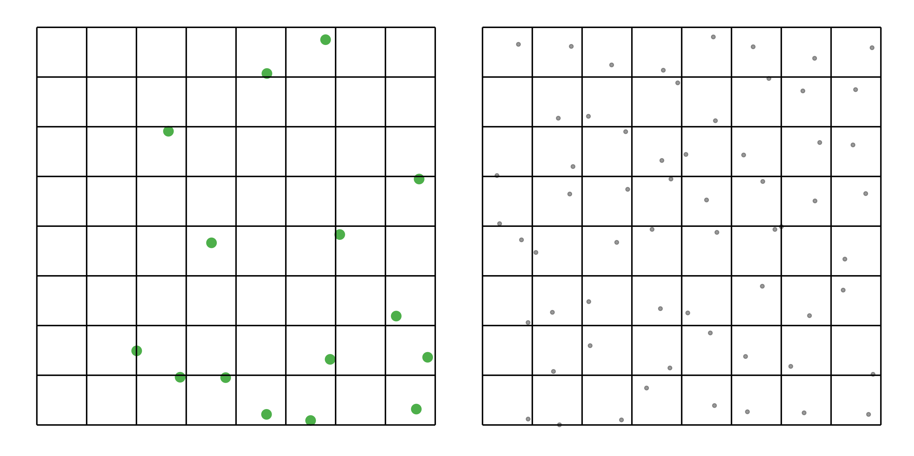

library(arrow)
library(auk)
library(dplyr)
library(ebirdst)
library(ggplot2)
library(sf)
library(terra)
checklists <- read_parquet("data/ebird_checklists_chile_2021.parquet")
glimpse(checklists)
#> Rows: 186,908
#> Columns: 98
#> $ checklist_id <int> 100062145, 100164965, 100241802, 1003…
#> $ observer_id <int> 796344, 2898939, 1676221, 185941, 534…
#> $ loc_id <chr> "Trax_S100062145", "L6626679", "Trax_…
#> $ longitude <dbl> -71.5, -71.0, -73.1, -70.2, -71.4, -7…
#> $ latitude <dbl> -32.9, -35.6, -40.6, -33.4, -32.7, -3…
#> $ is_stationary <dbl> 0, 0, 1, 0, 1, 0, 0, 0, 1, 0, 0, 0, 1…
#> $ year <int> 2021, 2021, 2021, 2012, 2021, 2021, 2…
#> $ day_of_year <dbl> 363, 365, 361, 52, 355, 360, 52, 55, …
#> $ hours_of_day <dbl> 10.95, 12.58, 16.05, 10.50, 9.70, 8.3…
#> $ solar_noon_diff_mid <dbl> -2.805, 1.778, 2.178, -2.936, -3.771,…
#> $ effort_hours <dbl> 0.134, 6.000, 0.084, 1.000, 0.567, 1.…
#> $ effort_distance_km <dbl> 0.340, 10.000, 0.000, 1.000, 0.000, 0…
#> $ effort_speed_kmph <dbl> 2.5373, 1.6667, 0.0000, 1.0000, 0.000…
#> $ number_observers <int> 1, 2, 1, 1, 1, 3, 1, 1, 1, 1, 1, 1, 1…
#> $ cds_u10 <dbl> 1.697, 3.316, 0.665, 1.505, 1.937, 0.…
#> $ cds_v10 <dbl> -3.1903, -1.0040, 3.4476, 0.5027, -1.…
#> $ cds_d2m <dbl> 12.541, 5.630, 13.361, -0.621, 12.222…
#> $ cds_t2m <dbl> 14.78, 19.96, 25.15, 12.15, 14.30, 11…
#> $ cds_hcc <dbl> 0.00000, 0.00000, 0.00000, 0.00000, 0…
#> $ cds_i10fg <dbl> 7.26, 12.81, 8.13, 8.37, 5.12, 4.71, …
#> $ cds_mcc <dbl> 0.0000, 0.0000, 0.6003, 0.0000, 0.000…
#> $ cds_lcc <dbl> 0.95340, 0.00000, 0.61487, 0.00000, 0…
#> $ cds_sf <dbl> 0, 0, 0, 0, 0, 0, 0, 0, 0, 0, 0, 0, 0…
#> $ cds_rf <dbl> 0, 0, 0, 0, 0, 0, 0, 0, 0, 0, 0, 0, 0…
#> $ cds_slc <dbl> 65.10, -30.67, -67.19, -41.09, 33.80,…
#> $ cds_msl <dbl> 101779, 101232, 101667, 101732, 10144…
#> $ eastness_1km_median <dbl> -0.00411, 0.00732, 0.01700, 0.04960, …
#> $ eastness_1km_sd <dbl> 0.2935, 0.2253, 0.1927, 0.1467, 0.244…
#> $ eastness_90m_median <dbl> -3.69e-02, 4.44e-02, -1.63e-03, 3.76e…
#> $ eastness_90m_sd <dbl> 0.04190, 0.25816, 0.02712, 0.28047, 0…
#> $ northness_1km_median <dbl> -0.169959, 0.052624, 0.505542, 0.0875…
#> $ northness_1km_sd <dbl> 0.1812, 0.2881, 0.2597, 0.2418, 0.225…
#> $ northness_90m_median <dbl> 5.68e-03, -5.46e-02, 9.70e-03, -2.38e…
#> $ northness_90m_sd <dbl> 0.03915, 0.24051, 0.04255, 0.12762, 0…
#> $ elev_30m_median <dbl> 34, 2130, 38, 2833, 76, 2904, 3146, 1…
#> $ elev_30m_sd <dbl> 33.82, 117.60, 16.55, 187.94, 25.46, …
#> $ elev_250m_median <dbl> 43.00, 2137.00, 45.00, 2843.00, 50.50…
#> $ elev_250m_sd <dbl> 38.21, 101.61, 14.22, 181.66, 58.86, …
#> $ island <dbl> 30002, 30002, 30002, 30002, 30002, 30…
#> $ astwbd_fs_c1_1500_ed <dbl> 3.38, 0.00, 0.00, 0.00, 5.55, 0.00, 0…
#> $ astwbd_fs_c1_1500_pland <dbl> 9.07, 0.00, 0.00, 0.00, 44.78, 0.00, …
#> $ astwbd_fs_c2_1500_ed <dbl> 0, 0, 0, 0, 0, 0, 0, 0, 0, 0, 0, 0, 0…
#> $ astwbd_fs_c2_1500_pland <dbl> 0, 0, 0, 0, 0, 0, 0, 0, 0, 0, 0, 0, 0…
#> $ astwbd_fs_c3_1500_ed <dbl> 0.00, 0.00, 0.00, 0.00, 0.00, 0.00, 0…
#> $ astwbd_fs_c3_1500_pland <dbl> 0.0, 0.0, 0.0, 0.0, 0.0, 0.0, 0.0, 0.…
#> $ gp_rtp_1 <dbl> 0, 0, 537, 0, 0, 0, 0, 0, 718, 0, 0, …
#> $ gp_rtp_2 <dbl> 391.3, 0.0, 40.7, 949.0, 328.6, 0.0, …
#> $ gp_rtp_3 <dbl> 0.0, 0.0, 24.3, 112.8, 0.0, 41.4, 0.0…
#> $ gp_rtp_4 <dbl> 0, 0, 0, 0, 0, 181, 0, 0, 0, 0, 0, 0,…
#> $ gp_rtp_5 <dbl> 0, 0, 0, 0, 0, 244, 0, 0, 0, 0, 0, 0,…
#> $ intertidal_fs_c1_1500_ed <dbl> 10.045, 0.000, 0.000, 0.000, 7.137, 0…
#> $ intertidal_fs_c1_1500_pland <dbl> 1.65, 0.00, 0.00, 0.00, 1.24, 0.00, 0…
#> $ ntl_mean <dbl> 1.75005, 0.00000, 28.90472, 1.67595, …
#> $ ntl_sd <dbl> 1.5571, 0.0000, 14.7225, 2.4289, 1.54…
#> $ mcd12q1_lccs1_fs_c1_1500_ed <dbl> 4.20, 14.10, 0.00, 7.19, 0.00, 5.40, …
#> $ mcd12q1_lccs1_fs_c1_1500_pland <dbl> 8.33, 36.73, 0.00, 63.89, 0.00, 47.22…
#> $ mcd12q1_lccs1_fs_c2_1500_ed <dbl> 0, 0, 0, 0, 0, 0, 0, 0, 0, 0, 0, 0, 0…
#> $ mcd12q1_lccs1_fs_c2_1500_pland <dbl> 0, 0, 0, 0, 0, 0, 0, 0, 0, 0, 0, 0, 0…
#> $ mcd12q1_lccs1_fs_c11_1500_ed <dbl> 0.00, 0.00, 0.00, 0.00, 0.00, 0.00, 0…
#> $ mcd12q1_lccs1_fs_c11_1500_pland <dbl> 0.0, 0.0, 0.0, 0.0, 0.0, 0.0, 0.0, 0.…
#> $ mcd12q1_lccs1_fs_c12_1500_ed <dbl> 0.00, 0.00, 0.00, 0.00, 0.00, 0.00, 0…
#> $ mcd12q1_lccs1_fs_c12_1500_pland <dbl> 0.00, 0.00, 0.00, 0.00, 0.00, 0.00, 0…
#> $ mcd12q1_lccs1_fs_c13_1500_ed <dbl> 0, 0, 0, 0, 0, 0, 0, 0, 0, 0, 0, 0, 0…
#> $ mcd12q1_lccs1_fs_c13_1500_pland <dbl> 0, 0, 0, 0, 0, 0, 0, 0, 0, 0, 0, 0, 0…
#> $ mcd12q1_lccs1_fs_c14_1500_ed <dbl> 0, 0, 0, 0, 0, 0, 0, 0, 0, 0, 0, 0, 0…
#> $ mcd12q1_lccs1_fs_c14_1500_pland <dbl> 0, 0, 0, 0, 0, 0, 0, 0, 0, 0, 0, 0, 0…
#> $ mcd12q1_lccs1_fs_c15_1500_ed <dbl> 0.00, 0.00, 0.00, 0.00, 0.00, 0.00, 0…
#> $ mcd12q1_lccs1_fs_c15_1500_pland <dbl> 0.00, 0.00, 0.00, 0.00, 0.00, 0.00, 0…
#> $ mcd12q1_lccs1_fs_c16_1500_ed <dbl> 0, 0, 0, 0, 0, 0, 0, 0, 0, 0, 0, 0, 0…
#> $ mcd12q1_lccs1_fs_c16_1500_pland <dbl> 0, 0, 0, 0, 0, 0, 0, 0, 0, 0, 0, 0, 0…
#> $ mcd12q1_lccs1_fs_c21_1500_ed <dbl> 3.60, 0.00, 0.00, 0.00, 0.00, 0.00, 0…
#> $ mcd12q1_lccs1_fs_c21_1500_pland <dbl> 5.56, 0.00, 0.00, 0.00, 0.00, 0.00, 0…
#> $ mcd12q1_lccs1_fs_c22_1500_ed <dbl> 13.19, 2.64, 3.08, 0.00, 6.68, 0.00, …
#> $ mcd12q1_lccs1_fs_c22_1500_pland <dbl> 61.11, 6.12, 89.80, 0.00, 61.90, 0.00…
#> $ mcd12q1_lccs1_fs_c31_1500_ed <dbl> 7.79, 2.20, 3.08, 0.00, 3.08, 3.00, 0…
#> $ mcd12q1_lccs1_fs_c31_1500_pland <dbl> 22.22, 10.20, 10.20, 0.00, 4.76, 5.56…
#> $ mcd12q1_lccs1_fs_c32_1500_ed <dbl> 0.00, 18.06, 0.00, 7.19, 0.00, 8.39, …
#> $ mcd12q1_lccs1_fs_c32_1500_pland <dbl> 0.00, 46.94, 0.00, 36.11, 0.00, 47.22…
#> $ mcd12q1_lccs1_fs_c41_1500_ed <dbl> 0, 0, 0, 0, 0, 0, 0, 0, 0, 0, 0, 0, 0…
#> $ mcd12q1_lccs1_fs_c41_1500_pland <dbl> 0, 0, 0, 0, 0, 0, 0, 0, 0, 0, 0, 0, 0…
#> $ mcd12q1_lccs1_fs_c42_1500_ed <dbl> 0.00, 0.00, 0.00, 0.00, 0.00, 0.00, 0…
#> $ mcd12q1_lccs1_fs_c42_1500_pland <dbl> 0.00, 0.00, 0.00, 0.00, 0.00, 0.00, 0…
#> $ mcd12q1_lccs1_fs_c43_1500_ed <dbl> 0.00, 0.00, 0.00, 0.00, 0.00, 0.00, 0…
#> $ mcd12q1_lccs1_fs_c43_1500_pland <dbl> 0.00, 0.00, 0.00, 0.00, 0.00, 0.00, 0…
#> $ mcd12q1_lccs1_fs_c255_1500_ed <dbl> 0, 0, 0, 0, 0, 0, 0, 0, 0, 0, 0, 0, 0…
#> $ mcd12q1_lccs1_fs_c255_1500_pland <dbl> 0, 0, 0, 0, 0, 0, 0, 0, 0, 0, 0, 0, 0…
#> $ mcd12q1_lccs2_fs_c25_1500_ed <dbl> 0, 0, 0, 0, 0, 0, 0, 0, 0, 0, 0, 0, 0…
#> $ mcd12q1_lccs2_fs_c25_1500_pland <dbl> 0, 0, 0, 0, 0, 0, 0, 0, 0, 0, 0, 0, 0…
#> $ mcd12q1_lccs2_fs_c35_1500_ed <dbl> 0, 0, 0, 0, 0, 0, 0, 0, 0, 0, 0, 0, 0…
#> $ mcd12q1_lccs2_fs_c35_1500_pland <dbl> 0, 0, 0, 0, 0, 0, 0, 0, 0, 0, 0, 0, 0…
#> $ mcd12q1_lccs2_fs_c36_1500_ed <dbl> 0.00, 0.00, 0.00, 0.00, 0.00, 0.00, 0…
#> $ mcd12q1_lccs2_fs_c36_1500_pland <dbl> 0.00, 0.00, 0.00, 0.00, 0.00, 0.00, 0…
#> $ mcd12q1_lccs3_fs_c27_1500_ed <dbl> 0.00, 0.00, 0.00, 0.00, 2.06, 0.00, 0…
#> $ mcd12q1_lccs3_fs_c27_1500_pland <dbl> 0.00, 0.00, 0.00, 0.00, 2.38, 0.00, 0…
#> $ mcd12q1_lccs3_fs_c50_1500_ed <dbl> 0.00, 0.00, 0.00, 0.00, 0.00, 0.00, 0…
#> $ mcd12q1_lccs3_fs_c50_1500_pland <dbl> 0.00, 0.00, 0.00, 0.00, 0.00, 0.00, 0…
#> $ mcd12q1_lccs3_fs_c51_1500_ed <dbl> 0.0, 0.0, 0.0, 0.0, 0.0, 2.4, 0.0, 0.…
#> $ mcd12q1_lccs3_fs_c51_1500_pland <dbl> 0.00, 0.00, 0.00, 0.00, 0.00, 2.78, 0…1 eBird Data
eBird data are collected and organized around the concept of a checklist, representing observations from a single birding event, such as a 1 km walk through a park or 15 minutes observing bird feeders in your backyard. All eBird checklists contains a list of species observed and the location and time of the observations. For a subset of checklists, the observer will also provide counts of the number of individuals seen of each species, specify the amount of effort expended while collecting these data, and confirm that they are submitting a complete checklist of all the birds they were able to identify. The data provided by the checklists such as these is often referred to as semi-structured citizen science data.
Let’s compare two eBird checklists: an incidental observation with missing counts and a complete traveling count. Both checklists can be useful, but only the second checklist provides the type of semi-structured data required for more rigorous applications.
This lesson will focus on the eBird Reference Dataset (ERD), the collection of semi-structured eBird data used by the eBird Status and Trends team for modeling species distributions and relative abundance. A subset of this dataset for Chile was provided in the data package for this workshop. In the following sections we’ll provide an introduction to the ERD, describe the associated prediction grid used to make predictions across space, and highlight some of the challenges associated with using eBird data for analysis.
Tip
This workshop will only cover the eBird Reference Dataset (ERD), a subset of the eBird database generated annually by the eBird Status and Trends team. For access to the full eBird dataset updated monthly, you’ll need to work with the eBird Basic Dataset (EBD). This dataset is more challenging to work with and does not contain any habitat variables, but it is more current and complete. For details on working with the EBD consult the eBird Best Practices book.
1.1 eBird Reference Dataset (ERD)
The eBird Reference Dataset (ERD) is a subset of the full eBird database released annually, containing only semi-structured (complete checklists with effort information) traveling and stationary counts from the last 15 years. The ERD is distributed in two parts: observation data and checklist data. In the observation dataset, each row corresponds to the sighting of a single species on a checklist, including the count and any other species-level information (e.g. age, sex, species comments, etc.). In the checklist dataset, each row corresponds to a checklist, including the date, time, location, effort (e.g. distance traveled, time spent, etc.), and any additional checklist-level information (e.g. whether this is a complete checklist or not). These two datasets are provided in parquet format, an open source standard for efficient storage and retrieval of tabular data, in the following files:
data/ebird_observations_chile_2021.parquet
data/ebird_checklists_chile_2021.parquetLet’s start by reading these two datasets into R using the arrow package and exploring them. We’ll start with the checklist dataset.
There are a huge number of columns in this data frame. The first set of variables provide standard information about the checklist: where and when did the observation occur, what type of search was conducted, and how much search effort was expended. Two important differences exist between these variables and what you will see if you look at the raw eBird dataset: when a GPS track is available we replace the checklist or hotspot location (latitude/longitude) with the centroid of the track and the time of the checklist is expressed as the difference between the checklist midpoint and solar noon, a more ecologically meaningful quantity.
All the remaining variables are not collected in eBird, they’re calculated and added by the Status and Trends team based on external data sets. First, those variables beginning with cds_, provides information about the weather at the time of the observation, which can impact detectibility. This is followed by a large suite of environmental variables summarized over a 3km diameter circular neighborhood around the checklist location, including variables describing: elevation and topography, land and water cover, roads, and night time lights (a proxy for urban development). Most variables are summarized as two quantities expressing composition (what habitat is available) and configuration (how that habitat is arranged spatially). For continuous variables, such as elevation, we use the median and standard deviation. For categorical variables, such as land cover class, we use percent landcover (pland) and edge density (ed).

pland for each class is the percent of the circle covered by that class. To calculate ed for each class, we add up the perimeter lengths of all patches of that class, then divide by the area of the circle.The land and water cover variables can be challenging to interpret based on their names alone (e.g. mcd12q1_lccs1_fs_c12_1500_pland); however, these names can be looked up in the ebirdst_predictors data frame from the ebirdst package. For example, let’s look up what mcd12q1_lccs1_fs_c12_1500_pland corresponds to.
filter(ebirdst_predictors, predictor == "mcd12q1_lccs1_fs_c12_1500_pland") %>%
select(predictor, predictor_label)
#> # A tibble: 1 × 2
#> predictor predictor_label
#> <chr> <chr>
#> 1 mcd12q1_lccs1_fs_c12_1500_pland Evergreen Broadleaf Forests PLAND
Checkpoint
Take some time to explore the variables in the checklist dataset. Try looking up a variable in ebirst_predictors. Ask for help if you need clarification on the meaning of any of the variables.
Now let’s look at the observation dataset.
observations <- read_parquet("data/ebird_observations_chile_2021.parquet")
glimpse(observations)
#> Rows: 2,167,999
#> Columns: 5
#> $ checklist_id <dbl> 1e+08, 1e+08, 1e+08, 1e+08, 1e+08, 1e+08, 1e+08…
#> $ species_code <chr> "eardov1", "blcsis2", "gyhsif1", "houwre", "reb…
#> $ only_presence_reported <int> 0, 0, 0, 0, 0, 0, 0, 0, 0, 1, 0, 1, 1, 1, 1, 1,…
#> $ valid <int> 1, 1, 1, 1, 1, 1, 1, 1, 1, 1, 1, 1, 1, 1, 1, 1,…
#> $ obs_count <int> 2, 4, 2, 1, 1, 3, 1, 4, 1, NA, 1, NA, NA, NA, N…This is a much simpler dataset with only five columns:
checklist_id: unique identifier for the checklist that this observation belongs to. Allows joining the observation data to the checklist data.species_code: unique identifier for the species that this observation was made for.only_presence_reported: a binary variable indicating if a count of the number of individuals seen was provided for the species (0) or if an “X” was used to indicate the species was detected but not counted (1).valid: a binary variable indicating is the observation was determined to be valid (1) or invalid (0) by the eBird reviewers.obs_count: count of the number of individuals or anNAif no count was provided.
Tip
To look up the common name or scientific name of a species try appending the species code to the URL https://ebird.org/species/. For example, visit https://ebird.org/species/eardov1 to look up the species code eardov1. This information is also available in the ebird_taxonomy data frame in the auk package.
filter(ebird_taxonomy, species_code == "eardov1") %>%
select(species_code, common_name, scientific_name, family)
#> species_code common_name scientific_name family
#> 1 eardov1 Eared Dove Zenaida auriculata Columbidae1.2 Zero-filling eBird data
Complete eBird checklists are extremely valuable because, for all species that weren’t reported, we can infer counts of 0. This allows us to convert eBird from presence only data to detection/non-detection data, which allows for much more robust analyses. Note that we don’t use the term presence/absence data here because a non-detection doesn’t necessarily imply the species was absent, only that observer wasn’t able to detect and identify it.
We refer to the process of producing detection/non-detection data as “zero-filling” the eBird data because we’re filling in the missing zeros. Let’s consider observations of Chucao Tapaculo (species code chutap1).
chutap1_detections <- observations %>%
filter(species_code == "chutap1") %>%
select(checklist_id, valid, obs_count) %>%
mutate(obs_detected = 1L)Next join this set of detections to the complete set of checklists, including detections and non-detections.
chutap1_all <- left_join(checklists, chutap1_detections, by = "checklist_id") %>%
select(checklist_id, latitude, longitude, year, day_of_year,
valid, obs_count, obs_detected)
head(chutap1_all)
#> # A tibble: 6 × 8
#> checklist_id latitude longitude year day_of_year valid obs_count obs_detected
#> <dbl> <dbl> <dbl> <int> <dbl> <int> <int> <int>
#> 1 100062145 -32.9 -71.5 2021 363 NA NA NA
#> 2 100164965 -35.6 -71.0 2021 365 1 NA 1
#> 3 100241802 -40.6 -73.1 2021 361 NA NA NA
#> 4 10034436 -33.4 -70.2 2012 52 NA NA NA
#> 5 100385722 -32.7 -71.4 2021 355 NA NA NA
#> 6 100390786 -33.3 -70.3 2021 360 NA NA NAFinally, for rows where Chucao Tapaculo was not detected we can replace the missing counts with 0. At this time, we recommend removing any checklists with valid == 0 because there is uncertainty about whether or not the species was detected.
chutap1_zf <- chutap1_all %>%
filter(is.na(valid) | valid == 1) %>%
mutate(
# checklist not in the observations dataset are non-detections
obs_detected = coalesce(obs_detected, 0L),
# non-detections correspond to a count of 0
obs_count = if_else(obs_detected == 1, obs_count, 0)
)We can now, for example, make a map of Chucao Tapaculo observations in the Chilean region of Los Lagos We’ll use spatial data that was prepared in advance and provided in the data package.
# load and project gis data
map_proj <- "+proj=laea +lat_0=-40 +lon_0=-72"
ne_land <- read_sf("data/gis-data.gpkg", "ne_land") %>%
st_transform(crs = map_proj) %>%
st_geometry()
ne_country_lines <- read_sf("data/gis-data.gpkg", "ne_country_lines") %>%
st_transform(crs = map_proj) %>%
st_geometry()
ne_state_lines <- read_sf("data/gis-data.gpkg", "ne_state_lines") %>%
st_transform(crs = map_proj) %>%
st_geometry()
los_lagos <- read_sf("data/gis-data.gpkg", "ne_states") %>%
filter(state_code == "CL-LL") %>%
st_transform(crs = map_proj) %>%
st_geometry()
# prepare ebird data for mapping
chutap1_sf <- chutap1_zf %>%
# convert to spatial points
st_as_sf(coords = c("longitude", "latitude"), crs = 4326) %>%
st_transform(crs = map_proj)
# map
par(mar = c(0.25, 0.25, 0.25, 0.25))
# set up plot area
plot(st_geometry(los_lagos), col = NA, border = NA)
# contextual gis data
plot(ne_land, col = "#cfcfcf", border = "#888888", lwd = 0.5, add = TRUE)
plot(los_lagos, col = "#e6e6e6", border = NA, add = TRUE)
plot(ne_state_lines, col = "#ffffff", lwd = 0.75, add = TRUE)
plot(ne_country_lines, col = "#ffffff", lwd = 1.5, add = TRUE)
# ebird observations
# all
plot(chutap1_sf,
pch = 19, cex = 0.1, col = scales::alpha("#555555", 0.25),
add = TRUE)
#> Warning in plot.sf(chutap1_sf, pch = 19, cex = 0.1, col =
#> scales::alpha("#555555", : ignoring all but the first attribute
# detection
plot(filter(chutap1_sf, obs_detected == 1),
pch = 19, cex = 0.3, col = scales::alpha("#4daf4a", 1),
add = TRUE)
#> Warning in plot.sf(filter(chutap1_sf, obs_detected == 1), pch = 19, cex = 0.3,
#> : ignoring all but the first attribute
# legend
legend("bottomright", bty = "n",
col = c("#555555", "#4daf4a"),
legend = c("eBird checklists", "Chucao Tapaculo sightings"),
pch = 19)
box()
par(new = TRUE, mar = c(0, 0, 3, 0))
title("Chucao Tapaculo eBird Observations\nJune 2007-2021")
1.3 Prediction grid
The ultimate goal of modeling the occurrence or abundance of a species is frequently to produce a map showing the distribution of that species in space. To do so, we need to know the values of our predictor variables over the region that we intend to make predictions. To make this possible, the ERD is distributed with a prediction grid: a regular grid of points covering the entire globe spaced 3km apart for which all the environmental variables have been calculated for the year 2021. Internally, we often refer to this prediction grid as the Spatial Reference Dataset (SRD).
The data package for this course contains a subset of the prediction grid for Chile. The file data/ebird_prediction-grid_chile_2021.parquet contains the environmental variables for each point on the grid and the file data/prediction-grid_template.tif is a 3km by 3km raster template where each each cell center is a point on the prediction grid. Let’s start by examining the environmental variables.
prediction_grid <- read_parquet("data/ebird_prediction-grid_chile_2021.parquet")
glimpse(prediction_grid)
#> Rows: 151,313
#> Columns: 83
#> $ srd_id <int> 54237418, 54237419, 54237420, 5423742…
#> $ longitude <dbl> -69.4, -69.4, -69.4, -69.3, -69.3, -6…
#> $ latitude <dbl> -17, -17, -17, -17, -17, -17, -17, -1…
#> $ eastness_1km_median <dbl> -0.058229, -0.044364, -0.047317, -0.0…
#> $ eastness_1km_sd <dbl> 0.2181, 0.1155, 0.2455, 0.1704, 0.266…
#> $ eastness_90m_median <dbl> 0.06977, 0.03524, 0.00753, -0.02868, …
#> $ eastness_90m_sd <dbl> 0.1154, 0.1539, 0.1562, 0.0899, 0.112…
#> $ northness_1km_median <dbl> 0.01759, -0.00286, 0.02578, 0.08451, …
#> $ northness_1km_sd <dbl> 0.236, 0.251, 0.125, 0.278, 0.253, 0.…
#> $ northness_90m_median <dbl> -0.00962, -0.01659, 0.00475, -0.01966…
#> $ northness_90m_sd <dbl> 0.1396, 0.1397, 0.0844, 0.1282, 0.136…
#> $ elev_30m_median <dbl> 4271, 4073, 4051, 4008, 4167, 4116, 4…
#> $ elev_30m_sd <dbl> 76.5, 65.6, 104.6, 73.8, 82.4, 34.0, …
#> $ elev_250m_median <dbl> 4269, 4083, 4063, 4018, 4181, 4131, 4…
#> $ elev_250m_sd <dbl> 72.6, 58.7, 98.3, 73.8, 71.4, 30.8, 3…
#> $ island <dbl> 30002, 30002, 30002, 30002, 30002, 30…
#> $ astwbd_fs_c1_1500_ed <dbl> 0, 0, 0, 0, 0, 0, 0, 0, 0, 0, 0, 0, 0…
#> $ astwbd_fs_c1_1500_pland <dbl> 0, 0, 0, 0, 0, 0, 0, 0, 0, 0, 0, 0, 0…
#> $ astwbd_fs_c2_1500_ed <dbl> 0, 0, 0, 0, 0, 0, 0, 0, 0, 0, 0, 0, 0…
#> $ astwbd_fs_c2_1500_pland <dbl> 0, 0, 0, 0, 0, 0, 0, 0, 0, 0, 0, 0, 0…
#> $ astwbd_fs_c3_1500_ed <dbl> 0, 0, 0, 0, 0, 0, 0, 0, 0, 0, 0, 0, 0…
#> $ astwbd_fs_c3_1500_pland <dbl> 0, 0, 0, 0, 0, 0, 0, 0, 0, 0, 0, 0, 0…
#> $ gp_rtp_1 <dbl> 0, 0, 0, 0, 0, 0, 0, 0, 0, 0, 0, 0, 0…
#> $ gp_rtp_2 <dbl> 0, 0, 0, 0, 0, 0, 0, 0, 0, 0, 0, 0, 0…
#> $ gp_rtp_3 <dbl> 0.0, 505.6, 189.7, 132.4, 0.0, 219.8,…
#> $ gp_rtp_4 <dbl> 0.0, 0.0, 586.0, 321.2, 0.0, 678.3, 7…
#> $ gp_rtp_5 <dbl> 0, 0, 0, 0, 0, 0, 0, 0, 0, 0, 0, 0, 0…
#> $ intertidal_fs_c1_1500_ed <dbl> 0, 0, 0, 0, 0, 0, 0, 0, 0, 0, 0, 0, 0…
#> $ intertidal_fs_c1_1500_pland <dbl> 0, 0, 0, 0, 0, 0, 0, 0, 0, 0, 0, 0, 0…
#> $ ntl_mean <dbl> 0.000, 0.000, 0.000, 0.000, 0.000, 0.…
#> $ ntl_sd <dbl> 0.000, 0.000, 0.000, 0.000, 0.000, 0.…
#> $ mcd12q1_lccs1_fs_c1_1500_ed <dbl> 0, 0, 0, 0, 0, 0, 0, 0, 0, 0, 0, 0, 0…
#> $ mcd12q1_lccs1_fs_c1_1500_pland <dbl> 0, 0, 0, 0, 0, 0, 0, 0, 0, 0, 0, 0, 0…
#> $ mcd12q1_lccs1_fs_c2_1500_ed <dbl> 0, 0, 0, 0, 0, 0, 0, 0, 0, 0, 0, 0, 0…
#> $ mcd12q1_lccs1_fs_c2_1500_pland <dbl> 0, 0, 0, 0, 0, 0, 0, 0, 0, 0, 0, 0, 0…
#> $ mcd12q1_lccs1_fs_c11_1500_ed <dbl> 0, 0, 0, 0, 0, 0, 0, 0, 0, 0, 0, 0, 0…
#> $ mcd12q1_lccs1_fs_c11_1500_pland <dbl> 0, 0, 0, 0, 0, 0, 0, 0, 0, 0, 0, 0, 0…
#> $ mcd12q1_lccs1_fs_c12_1500_ed <dbl> 0, 0, 0, 0, 0, 0, 0, 0, 0, 0, 0, 0, 0…
#> $ mcd12q1_lccs1_fs_c12_1500_pland <dbl> 0, 0, 0, 0, 0, 0, 0, 0, 0, 0, 0, 0, 0…
#> $ mcd12q1_lccs1_fs_c13_1500_ed <dbl> 0, 0, 0, 0, 0, 0, 0, 0, 0, 0, 0, 0, 0…
#> $ mcd12q1_lccs1_fs_c13_1500_pland <dbl> 0, 0, 0, 0, 0, 0, 0, 0, 0, 0, 0, 0, 0…
#> $ mcd12q1_lccs1_fs_c14_1500_ed <dbl> 0, 0, 0, 0, 0, 0, 0, 0, 0, 0, 0, 0, 0…
#> $ mcd12q1_lccs1_fs_c14_1500_pland <dbl> 0, 0, 0, 0, 0, 0, 0, 0, 0, 0, 0, 0, 0…
#> $ mcd12q1_lccs1_fs_c15_1500_ed <dbl> 0, 0, 0, 0, 0, 0, 0, 0, 0, 0, 0, 0, 0…
#> $ mcd12q1_lccs1_fs_c15_1500_pland <dbl> 0, 0, 0, 0, 0, 0, 0, 0, 0, 0, 0, 0, 0…
#> $ mcd12q1_lccs1_fs_c16_1500_ed <dbl> 0, 0, 0, 0, 0, 0, 0, 0, 0, 0, 0, 0, 0…
#> $ mcd12q1_lccs1_fs_c16_1500_pland <dbl> 0, 0, 0, 0, 0, 0, 0, 0, 0, 0, 0, 0, 0…
#> $ mcd12q1_lccs1_fs_c21_1500_ed <dbl> 0, 0, 0, 0, 0, 0, 0, 0, 0, 0, 0, 0, 0…
#> $ mcd12q1_lccs1_fs_c21_1500_pland <dbl> 0, 0, 0, 0, 0, 0, 0, 0, 0, 0, 0, 0, 0…
#> $ mcd12q1_lccs1_fs_c22_1500_ed <dbl> 0, 0, 0, 0, 0, 0, 0, 0, 0, 0, 0, 0, 0…
#> $ mcd12q1_lccs1_fs_c22_1500_pland <dbl> 0, 0, 0, 0, 0, 0, 0, 0, 0, 0, 0, 0, 0…
#> $ mcd12q1_lccs1_fs_c31_1500_ed <dbl> 7.71, 11.99, 8.39, 13.88, 5.40, 7.19,…
#> $ mcd12q1_lccs1_fs_c31_1500_pland <dbl> 42.86, 66.67, 80.56, 38.10, 16.67, 78…
#> $ mcd12q1_lccs1_fs_c32_1500_ed <dbl> 9.76, 9.59, 6.00, 7.19, 11.39, 0.00, …
#> $ mcd12q1_lccs1_fs_c32_1500_pland <dbl> 26.19, 16.67, 13.89, 14.29, 33.33, 0.…
#> $ mcd12q1_lccs1_fs_c41_1500_ed <dbl> 0, 0, 0, 0, 0, 0, 0, 0, 0, 0, 0, 0, 0…
#> $ mcd12q1_lccs1_fs_c41_1500_pland <dbl> 0, 0, 0, 0, 0, 0, 0, 0, 0, 0, 0, 0, 0…
#> $ mcd12q1_lccs1_fs_c42_1500_ed <dbl> 0.00, 0.00, 0.00, 0.00, 0.00, 2.57, 4…
#> $ mcd12q1_lccs1_fs_c42_1500_pland <dbl> 0.00, 0.00, 0.00, 0.00, 0.00, 7.14, 2…
#> $ mcd12q1_lccs1_fs_c43_1500_ed <dbl> 7.19, 4.80, 3.60, 16.96, 14.39, 4.63,…
#> $ mcd12q1_lccs1_fs_c43_1500_pland <dbl> 30.95, 16.67, 5.56, 47.62, 50.00, 14.…
#> $ mcd12q1_lccs1_fs_c255_1500_ed <dbl> 0, 0, 0, 0, 0, 0, 0, 0, 0, 0, 0, 0, 0…
#> $ mcd12q1_lccs1_fs_c255_1500_pland <dbl> 0, 0, 0, 0, 0, 0, 0, 0, 0, 0, 0, 0, 0…
#> $ mcd12q1_lccs2_fs_c25_1500_ed <dbl> 0, 0, 0, 0, 0, 0, 0, 0, 0, 0, 0, 0, 0…
#> $ mcd12q1_lccs2_fs_c25_1500_pland <dbl> 0, 0, 0, 0, 0, 0, 0, 0, 0, 0, 0, 0, 0…
#> $ mcd12q1_lccs2_fs_c35_1500_ed <dbl> 0, 0, 0, 0, 0, 0, 0, 0, 0, 0, 0, 0, 0…
#> $ mcd12q1_lccs2_fs_c35_1500_pland <dbl> 0, 0, 0, 0, 0, 0, 0, 0, 0, 0, 0, 0, 0…
#> $ mcd12q1_lccs2_fs_c36_1500_ed <dbl> 0, 0, 0, 0, 0, 0, 0, 0, 0, 0, 0, 0, 0…
#> $ mcd12q1_lccs2_fs_c36_1500_pland <dbl> 0, 0, 0, 0, 0, 0, 0, 0, 0, 0, 0, 0, 0…
#> $ mcd12q1_lccs3_fs_c27_1500_ed <dbl> 0, 0, 0, 0, 0, 0, 0, 0, 0, 0, 0, 0, 0…
#> $ mcd12q1_lccs3_fs_c27_1500_pland <dbl> 0, 0, 0, 0, 0, 0, 0, 0, 0, 0, 0, 0, 0…
#> $ mcd12q1_lccs3_fs_c50_1500_ed <dbl> 0, 0, 0, 0, 0, 0, 0, 0, 0, 0, 0, 0, 0…
#> $ mcd12q1_lccs3_fs_c50_1500_pland <dbl> 0, 0, 0, 0, 0, 0, 0, 0, 0, 0, 0, 0, 0…
#> $ mcd12q1_lccs3_fs_c51_1500_ed <dbl> 1.54, 0.00, 0.00, 0.00, 1.80, 1.54, 1…
#> $ mcd12q1_lccs3_fs_c51_1500_pland <dbl> 2.38, 0.00, 0.00, 0.00, 2.78, 2.38, 2…
#> $ mod44w_oic_fs_c1_1500_ed <dbl> 0, 0, 0, 0, 0, 0, 0, 0, 0, 0, 0, 0, 0…
#> $ mod44w_oic_fs_c1_1500_pland <dbl> 0, 0, 0, 0, 0, 0, 0, 0, 0, 0, 0, 0, 0…
#> $ mod44w_oic_fs_c2_1500_ed <dbl> 0, 0, 0, 0, 0, 0, 0, 0, 0, 0, 0, 0, 0…
#> $ mod44w_oic_fs_c2_1500_pland <dbl> 0, 0, 0, 0, 0, 0, 0, 0, 0, 0, 0, 0, 0…
#> $ mod44w_oic_fs_c3_1500_ed <dbl> 0, 0, 0, 0, 0, 0, 0, 0, 0, 0, 0, 0, 0…
#> $ mod44w_oic_fs_c3_1500_pland <dbl> 0, 0, 0, 0, 0, 0, 0, 0, 0, 0, 0, 0, 0…
#> $ mcd12q1_lccs2_fs_c9_1500_ed <dbl> 0, 0, 0, 0, 0, 0, 0, 0, 0, 0, 0, 0, 0…
#> $ mcd12q1_lccs2_fs_c9_1500_pland <dbl> 0, 0, 0, 0, 0, 0, 0, 0, 0, 0, 0, 0, 0…These variables should be mostly familiar from the ERD, except for srd_id which is a unique identifier for each point on the grid. Next let’s load the raster template using the terra package.
raster_template <- rast("data/prediction-grid_template.tif")
raster_template
#> class : SpatRaster
#> dimensions : 5630, 13511, 1 (nrow, ncol, nlyr)
#> resolution : 2963, 2963 (x, y)
#> extent : -2e+07, 2e+07, -6673060, 1e+07 (xmin, xmax, ymin, ymax)
#> coord. ref. : +proj=sinu +lon_0=0 +x_0=0 +y_0=0 +R=6371007.181 +units=m +no_defs
#> source : prediction-grid_template.tif
#> name : mask
#> min value : 1
#> max value : 1This is a global 2.96km by 2.96km square grid in a equal area projection. We can use the terra function rasterize to insert values from the prediction grid into the template for mapping. For example, let’s make a raster dataset of percent cover of evergreen broadleaf forest (mcd12q1_lccs1_fs_c12_1500_pland).
forest_cover <- prediction_grid %>%
# convert to spatial object using sf
st_as_sf(coords = c("longitude", "latitude"), crs = 4326) %>%
# transform to the coordinate reference system of the raster
st_transform(crs = crs(raster_template)) %>%
# rasterize the points using the raster template
rasterize(raster_template, field = "mcd12q1_lccs1_fs_c12_1500_pland")Now we can make a simple map of evergreen broadleaf forest for Chile. Not that the raster template is global, but we can use trim() to remove all areas that have missing values for a map of Chile only.
plot(trim(forest_cover), axes = FALSE)
The map looks distorted because the prediction grid uses a sinusoidal projection, which works well for analysis but not for mapping. In the next lesson, we’ll demonstrate how to project data into a coordinate reference system more suitable for mapping.
1.4 Spatial and temporal bias
Despite the strengths of eBird data, species observations collected through citizen science projects exhibit both spatial and temporal bias requiring special care when using them for rigorous analyses. Spatial bias occurs because eBird participants are more likely to be collect data near their homes, in easily accessible areas such as roadsides, or in areas known to be good for birding. Looking at the above map of Chucao Tapaculo observations it’s clear that the eBird checklists are clustered around cities and roads. Temporal bias occurs because participants preferentially collect data when they are available, such as weekends, and at times of year when they expect to observe more birds, notably during the breeding season. We can plot the distribution of checklists over the days of the year to see this bias:
checklist_per_day <- checklists %>%
filter(day_of_year < 366) %>%
count(day_of_year)
ggplot(checklist_per_day) +
aes(x = day_of_year, y = n) +
geom_line() +
scale_y_continuous(labels = scales::comma) +
labs(x = "Day of Year", y = "# checklists",
title = "Daily eBird checklists submission") +
theme_gray()
Three is a clear seasonal pattern to the number of eBird checklists submitted (fewer checklists in the winter) as well as daily and weekly variation within seasons. In addition, there are two huge spikes in checklists submissions, one in May and the other in October, what do you think could be causing these sudden increases?
Finally, for most species, there is strong class imbalance in the data, meaning there are usually many more non-detections than detections. As a results, a distribution model predicting that the species is absent everywhere will have high accuracy, but no ecological value. For example, the prevalence rate of Chucao Tapaculo in Chile is only 5%.
mean(chutap1_zf$obs_detected)
#> [1] 0.0518To address these three issues (spatial bias, temporal bias, and class imbalance) we recommend subsampling the data using a technique called case controlled grid sampling. We overlay an equal area 3km by 3km grid over the checklists, then sample one detection and one non-detection from each grid cell for each week of each year. Let’s look at a simple example of how spatial grid sampling works.”





The function grid_sample_stratified() from the ebirdst package is specifically designed to perform case controlled grid sampling on eBird data. For example, let’s apply this technique to the Chucao Tapaculo observations.
# perform case controlled grid sampling
chutap1_sampled <- grid_sample_stratified(chutap1_zf,
obs_column = "obs_detected")
# how many checklists were removed?
nrow(chutap1_zf)
#> [1] 186906
nrow(chutap1_sampled)
#> [1] 77265
# how has prevalence changed
mean(chutap1_zf$obs_detected)
#> [1] 0.0518
mean(chutap1_sampled$obs_detected)
#> [1] 0.0728So, after sampling, we’re left with 41% of the observations we started with, but the spatial and temporal bias has been significantly reduced.
We now have the data and tools necessary to model relative abundance using eBird data, which will be the focus of Lesson 2.